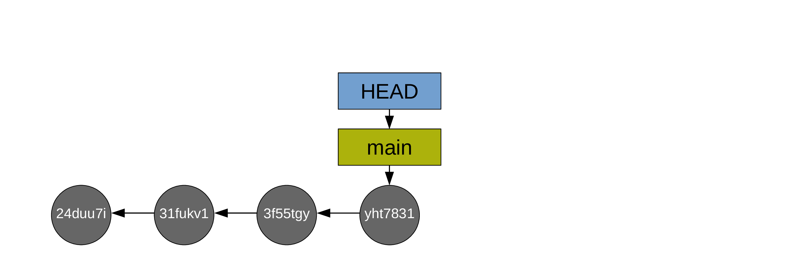
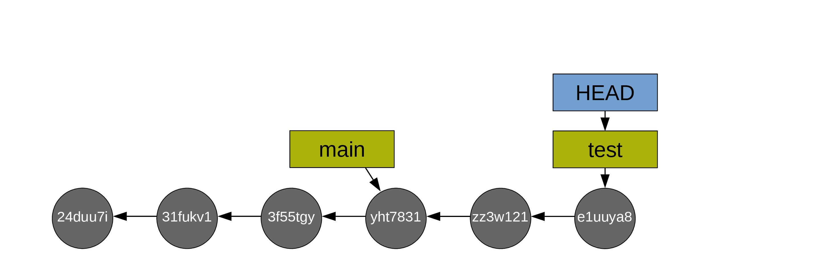
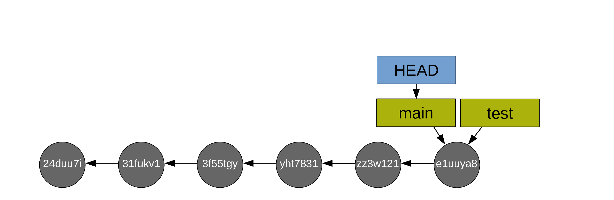
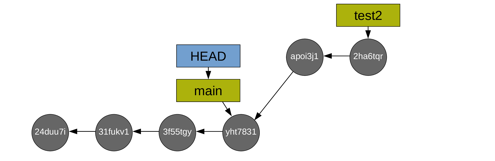
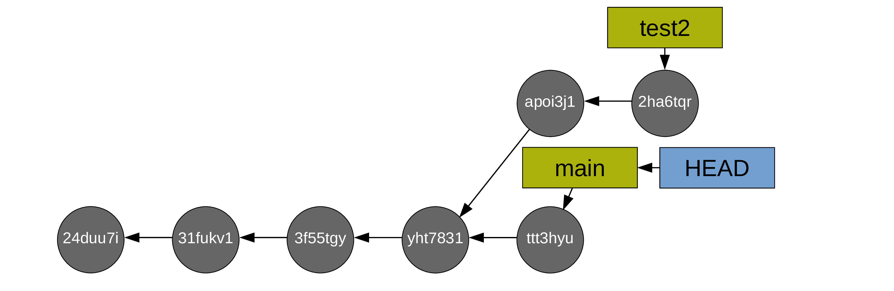

Branches
One of the reasons Git has become so popular is its branching system: unlike in other version control tools in which creating branches is a lengthy and expensive process involving heavy copies, a branch in Git is just a lightweight pointer to a commit. This makes creating branches extremely quick and cheap.
What is a branch?
A branch is a pointer to a commit (under the hood, it is a small file containing the 40 character hash checksum of the commit it points to).
When you run git status and get “On branch main” in the output, or when you run git log and see “(HEAD -> main)” in the log, it means that the HEAD pointer (your position in the Git history) points to the branch main (which itself points to a commit).

I know that is a lot of pointers … but this is really what makes Git so nimble, powerful, and fantastic. Because these pointers are very cheap (tiny files) and so useful.
Why use multiple branches?
Branches are useful in so many situations:
- If your changes break code, you still have a fully functional branch to go back to if needed.
- If you develop a tool being used, this allows you to experiment with new features until they are ready without messing up with the working project.
- You can create a branch for each alternative approach. This allows you to jump back and forth between various alternatives.
- You can work on different aspects of the project on different branches. This prevents having messy incomplete work all over the place on the same branch.
- If you want to revisit an old commit, you can create a branch there and switch to it instead of moving
HEAD(creating a detached HEAD situation). This way, if you decide to create new commits from that old one, you don’t risk loosing them. - Branches are great for collaboration: each person can work on their own branch and merge it back to the main branch when they are done with one section of a project.
And since branches are so cheap to create, there is no downside to their creation.
Creating branches and switching between branches
You can create a new branch with:
git branch <new-branch-name>Example:
git branch testand you can then switch to it with:
git switch <new-branch-name>Example:
git switch test
Alternatively, you can do both at once with the convenient:
git switch -c <new-branch-name>-c flag for “create”. So you create a branch and switch to it directly.
I find this last command most useful as it is all too easy otherwise to create a new branch, forget to switch to it, and create commits on the wrong branch …
Listing branches
git branch main
* testThe * shows the branch you are currently on (i.e. the branch to which HEAD points to). In our example, the project has two branches and we are on the branch test.
Comparing branches
You can use git diff to compare branches:
git diff main testThis shows all the lines that have been modified (added or deleted) between the commits both branches point to.
Merging branches
When you are happy with the changes you made on your test branch, you can merge it into main.
Fast-forward merge
If you have only created new commits on the branch test, the merge is called a “fast-forward merge” because main and test have not diverged: it is simply a question of having main catch up to test.

First, you switch to main:
git switch main
Then you do the fast-forward merge:
git merge test
Then, usually, you delete the branch test as it has served its purpose:
git branch -d test
Alternatively, you can switch back to test and do the next bit of experimental work on it. This allows to keep main free of mishaps and bad developments.
Three-way merge
If the branches have diverged (you created commits on both branches), the merge requires the creation of an additional commit called a “merge commit”.
Let’s go back to our situation before we created the branch test:
This time, you create a branch called test2:
and you switch to it:

Then you create some commits:


Now you switch back to main:

And you create commits from main too:


To merge your branch test2 into main, a new commit is now required. Git will create this new commit automatically. As long as there is no conflict, it is just as easy as a fast-forward merge:
git merge test2
After which, you can delete the (now useless) test branch (with git branch -d test2):

Resolving conflicts
Git works line by line. As long as you aren’t working on the same line(s) of the same file(s) on different branches, there will not be any merging difficulty. If however you modified one or more of the same line(s) of the same file(s) on different branches, Git has no way to decide which version should be kept and will thus not be able to complete the merge. It will then ask you to resolve the conflict(s). Conveniently, it will list the file(s) containing the conflict(s).
There are fancy tools to resolve conflicts, but you can do it in any text editor: simply open the file(s) listed by Git as having conflicts and look for the following markers:
<<<<<<< HEAD
This is your version.
=======
This is the alternative version of the same section of the file.
>>>>>>> alternative versionIn our case, it could look something like:
<<<<<<< HEAD
Great sentence.
=======
Great sentence with some variations.
>>>>>>> test2These markers are added by Git to signal the areas of conflict. It is up to you to choose between the two versions (or create a third one) and remove the conflict markers. After that, you can stage the file(s) which contained the conflicts to finish the merge (and then you can commit).